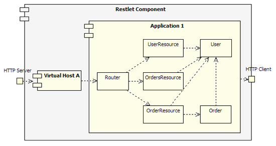

Reach target resources
In the previous example, we took advantage of the flexible routing features of the framework to route the requests while extracting interesting parts from the target URI. But, we didn’t pay attention to the request method, nor to the client preferences regarding the response that he expects. Also, how do we connect our Restlet handlers with the backend systems, the domain objects?
So far, we introduced features that go beyond the traditional Servlet API but we didn’t justify the REST part in our Restlet name! If you haven’t done so already, I recommend that you learn more about the REST architecture style and the best practices to follow when applying it to a Web application.
To summarize, a request contains an URI that identifies the target resource that is the subject of the call. This information is stored in the Request.resourceRef property and serves as the basis of the routing as we saw. So the first goal when handling a request is to find the target resource which is in the framework… an instance of the Resource class or more precisely one of its subclasses. To help us in this task, we can use the dedicated Finder, a subclass of Restlet, which takes a Resource class reference as an argument and which will automatically instantiate it when a request comes in. Then it will dynamically dispatch the call to the newly created instance, actually to one of its handle*() methods (handleGet, handleDelete, etc.) depending on the request method. Of course, this behavior can be customized. There is even an attach() method on Router that can take two arguments, an URI template and a Resource class and that transparently creates the Finder for you! Now, let’s have a look at this overall diagram, showing the relationship between the main framework classes involved in this example:

Back to the code, here is our refactored Application.createRoot() method. For simplicity purpose, we didn’t keep the Directory serving static files as this part wouldn’t change. You can notice the way that resource classes are directly attached to the router.
// Create a router
Router router = new Router(getContext());
// Attach the resources to the router
router.attach("/users/{user}", UserResource.class);
router.attach("/users/{user}/orders", OrdersResource.class);
router.attach("/users/{user}/orders/{order}", OrderResource.class);We will finally review one of the resource classes, the UserResource class. This class derives from org.restlet.resource.Resource and therefore has to override the three arguments constructor. This will initialize the useful “context”, “request” and “response” properties on our instances. Then, we use the attribute “user” that is automatically extracted from the “/users/{user}” URI template and store its value in a convenient member variable. At this point, in a full application, we would lookup our associated “user” domain object. Finally, we declare which representation variants we want to expose, in our case only plain text. This will be used at runtime to transparently do some content negotiation, in order to select the preferred variant for each request handled, all this transparently.
public class UserResource extends Resource {
String userName;
Object user;
public UserResource(Context context, Request request,
Response response) {
super(context, request, response);
this.userName = (String) request.getAttributes().get("user");
this.user = null; // Could be a lookup to a domain object.
// Here we add the representation variants exposed
getVariants().add(new Variant(MediaType.TEXT_PLAIN));
}
@Override
public Representation getRepresentation(Variant variant) {
Representation result = null;
if (variant.getMediaType().equals(MediaType.TEXT_PLAIN)) {
result = new StringRepresentation("Account of user \""
+ this.userName + "\"");
}
return result;
}
}You can have a look at the rest of the code in the tutorial package and test the application. You will obtain the same behavior as in Part11, with the difference that only GET requests will be accepted. If you want to enable PUT for example, you have to create an “allowPut()” method in UserResource that simply returns ’true’ then add a “put(Representation)” method to process the call. You can check the Javadocs for further details.